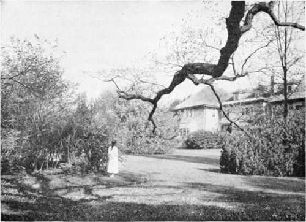

Chapter XXVIII. A Chapter On Lawns
Description
This section is from the book "Landscape Gardening", by Andrew Jackson Downing. Also available from Amazon: Landscape Gardening.
Chapter XXVIII. A Chapter On Lawns
LANDSCAPE GARDENING embraces, in the circle of its perfections many elements of beauty certainly not a less number than the modern chemists count as the simplest conditions of matter. But with something of the feeling of the old philosophers, who believed that earth, air, fire and water, included everything in nature, we like to go back to plain and simple facts of breadth and importance enough to embrace a multitude of little details. The great elements then, of landscape gardening, as we understand it, are trees and grass.
Trees — delicate, beautiful, grand, or majestic trees — pliantly answering to the wooing of the softest west wind, like the willow; or bravely and sturdily defying centuries of storm and tempest, like the oak — they are indeed the great "princes, potentates, and people," of our realm of beauty. But it is not to-day that we are permitted to sing triumphal songs in their praise.
In behalf of the grass — the turf, the lawn, — then, we ask our readers to listen to us for a short time. And by this we do not mean to speak of it in a moral sense, as did the inspired preacher of old, when he gravely told us that "all flesh is grass;" or in a style savoring of the vanities of costume, as did Prior, when he wrote the couplet, Or with the keen relish of the English jockey whose only idea of "the turf" is that of the place nature has specially provided him upon which to race horses.
"Those limbs in lawn and softest silk arrayed, From sunbeams guarded, and of winds afraid".
* Original date of November, 1846.
Neither do we look upon grass at the present moment with the eyes of our friend Tom Thrifty, the farmer, who cuts "three tons to the acre." We have in our present mood no patience with the tall and gigantic fodder, by this name, that grows in the fertile bottoms of the West, so tall that the largest Durham is lost to view while walking through it.
Fig. 41. A Well-Moulded Lawn.
No, we love most the soft turf which, beneath the flickering shadows of scattered trees, is thrown like a smooth natural carpet over the swelling outline of the smiling earth. Grass, not grown into tall meadows, or wild bog tussocks, but softened and refined by the frequent touches of the patient mower, till at last it becomes a perfect wonder of tufted freshness and verdure. Such grass, in short, as Shakespeare had in his mind, when he said, in words since echoed ten thousand times, "How sweet the moonlight sleeps upon that bank;" or Ariosto, in his Orlando — "The approaching night, not knowing where to pass, She checks her reins, and on the velvet grass, Beneath the umbrageous trees, her form she throws, To cheat the tedious hours with brief repose".
In short, the ideal of grass is a lawn, which is, to a meadow, what "Bishop's lawn" is to homespun Irish linen.
With such a lawn, and large and massive trees, one has indeed the most enduring sources of beauty in a country residence. Perpetual neatness, freshness and verdure in the one; ever expanding beauty, variety and grandeur in the other — what more does a reasonable man desire of the beautiful about him in the country? Must we add flowers, exotic plants, fruits? Perhaps so, but they are all, in an ornamental light, secondary to trees and grass, where these can be had in perfection. Only one other grand element is needed to make our landscape garden complete — water. A river, or a lake, in which the skies and the "tufted trees" may see themselves reflected, is ever an indispensable feature to a perfect landscape.
How to obtain a fine lawn is a question which has no doubt already puzzled many of our readers. They have thought, perhaps, that it would be quite sufficient to sow with grass seeds, or lay down neatly with sods, any plat of common soil, to mow it occasionally, to be repaid by the perpetual softness and verdure of an "English lawn".
They have found, however, after a patient trial in several seasons, that an American summer, so bright and sunny as to give us, in our fruits, almost the ripeness and prodigality of the tropics, does not, like that of Britain, ever moist and humid, naturally favor the condition of fine lawns.
Beautiful as our lawns usually are in May, June, September, and October, yet in July and August, they too often lose that freshness and verdure which is for them what the rose-bloom of youth is to a beauty of seventeen — their most captivating feature.
There are not wanting admirers of fine lawns, who, witnessing this summer searing, have pronounced it an impossible thing to produce a fine lawn in this country. To such an opinion we can never subscribe, for the very sufficient reason that we have seen over and over again admirable lawns wherever they have been properly treated. Fine lawns are therefore possible in all the northern half of the Union. What then are the necessary conditions to be observed, what the preliminary steps to be taken in order to obtain them? Let us answer in a few words — deep soil, the proper kinds of grasses and frequent mowing.
First of all, for us, deep soil. In a moist climate where showers or fogs give all vegetable nature a weekly succession of baths, one may raise a pretty bit of turf on a bare board with half an inch of soil. But here it does not require much observation or theory to teach us that if any plant is to maintain its verdure through a long and bright summer with alternate periods of wet and drouth it must have a deep soil in which to extend its roots. We have seen the roots of common clover, in trenched soil, which had descended to the depth of four feet! A surface drouth, or dry weather, had little power over a plant whose little fibres were in the cool moist understratum of that depth. And a lawn which is well established on thoroughly trenched soil, will remain, even in midsummer, of a fine dark verdure when upon the same soil untrenched every little period of dryness would give a brown and faded look to the turf.
Continue to: